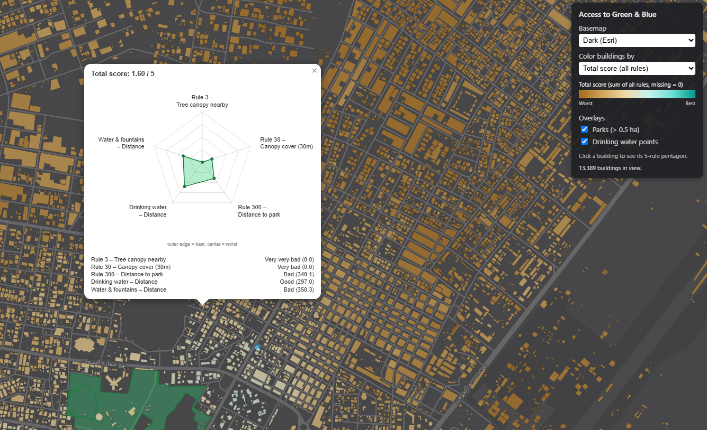

← Back to products

Green & blue access
Access to Green & Blue (3-30-300)
Picture: per-building total score over Bruges — from worst (amber) to best (teal). Click any building for its 5-rule pentagon.
Every building in a city, scored on real access to nature: tree canopy nearby, a park within reach, and the nearest drinking water or fountain — the 3-30-300 rule made measurable, street by street.
Strengths & innovation
- 3-30-300, quantifiedRule 3 (canopy visible nearby), Rule 30 (30% canopy cover within 30 m) and Rule 300 (a park within 300 m) scored per building, not per neighbourhood average.
- Blue access includedAdds distance to the nearest drinking-water point and public fountain — heat relief, not just greenery.
- Every building, individually43,000+ buildings scored in this demo city alone — no interpolation between sample points.
- Five-rule pentagonEach building gets a radar chart across all five rules, so a good total score can't hide one badly-served rule.
“A park two streets away is not “access to green” if there is no shade or water on the way — 3-30-300 only means something when it is measured door by door.”
Demo
2,700+ real scored buildings over Bruges, on a real map — every building is coloured by its total access score. Click any building to see its five-rule pentagon against the city average.
Loading demo data…
Free request
Free request — one city (OSM coverage required) scored against the 5 default rules. Request a city score →